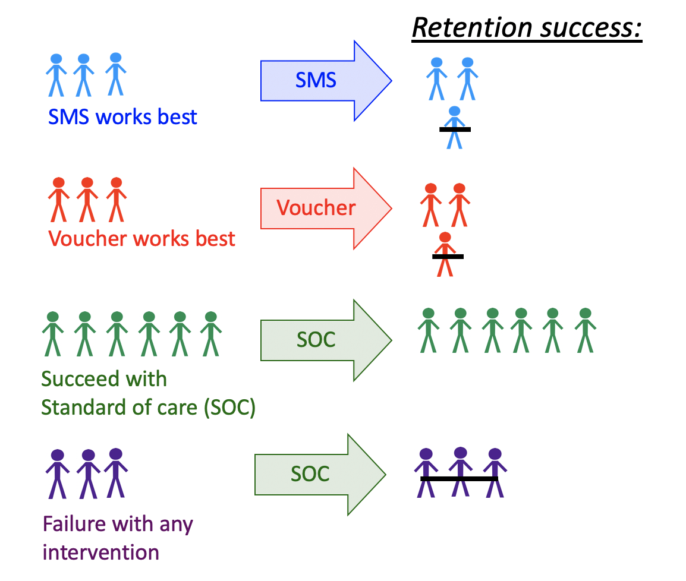

9 동적 및 최적의 개별화된 치료 요법
Ivana Malenica
Ivana Malenica, Jeremy Coyle, Mark van der Laan이 작성한 tmle3mopttx R 패키지를 바탕으로 합니다.
Note학습 목표
- 동적 및 최적의 동적 치료 중재를 정적 중재와 구별합니다.
- 실제 환경에서 최적의 개별화된 치료 요법을 사용하는 것과 관련된 이점과 과제를 설명합니다.
- 모집단에서 최적의 개별화된 치료 요법을 구현하는 효과를 정적 및 동적 치료 요법을 구현하는 효과와 대조합니다.
tmle3mopttxR패키지를 사용하여 최적의 개별화된 치료 요법 하에서의 인과 효과를 추정합니다.- 자원 제약이 있는 상황에서 최적의 개별화된 치료 하에서의 평균을 평가합니다.
- 하위 최적 요법 또는 “단순” 요법을 기반으로 최적의 개별화된 치료 규칙을 구현하고, 이러한 규칙의 실무적 이점을 인식합니다.
- 데이터에서 지원되는 중재만 고려함으로써 실제 데이터와 피험자 지식의 한계를 존중하는 “현실적인” 최적의 개별화된 치료 요법을 구성합니다.
- 추정된 최적의 개별화된 치료 규칙을 해석합니다.
- 최적의 개별화된 치료 중재 측면에서 정의된 변수 중요도를 측정합니다.
9.1 최적의 개별화된 중재 소개
생활 방식, 유전적 및 환경적 요인에 기반하여 어떤 환자에게 어떤 중재가 효과적일지 식별하는 것은 정밀 의료의 공통된 목표입니다. 맥락을 살펴보면, 아바카비르(Abacavir)와 테노포비르(Tenofovir)는 인체 면역 결핍 바이러스(HIV) 환자에게 항레트로바이러스 치료의 일부로 흔히 처방됩니다. 그러나 모든 개인이 두 가지 약물로부터 동일한 혜택을 받는 것은 아닙니다. 특히 신장 기능 장애가 있는 환자의 경우 테노포비르를 처방받으면 약물로 인한 높은 신독성 때문에 상태가 더욱 악화될 수 있습니다. 테노포비르는 여전히 HIV 환자들에게 매우 효과적인 치료 옵션이지만, 환자의 안녕을 극대화하기 위해서는 신장 기능이 건강한 개인에게만 테노포비르를 처방하는 것이 유익할 것입니다. 또 다른 예로, HIV 치료 유지율을 개선하는 것이 목표인 HIV 임상시험을 생각해 보십시오. 무작위 임상시험에서 문자 메시지를 통한 예약 알림, 정기적인 클리닉 방문에 대한 소액의 현금 인센티브, 동료 보건 요원 등 여러 중재가 효능을 보입니다. 이상적으로 우리는 각 환자에게 가장 혜택을 받을 가능성이 높은 중재를 할당하여 효과를 높이고 싶을 뿐만 아니라, 자원이 필요하지 않거나 혜택을 받지 못할 개인에게 자원을 할당하지 않음으로써 효율성을 개선하고 싶어 합니다.
사람은 모집단 차원에서 치료를 할당하는 대신, 혜택을 볼 개인에게 중재를 시행하는 쪽을 선택합니다. 하지만 어떤 환자에게 어떤 중재가 효과가 있는지 어떻게 알 수 있을까요? 이 목표는 이전 장에서 설명한 정적 노출과는 다른 유형의 중재를 동기 부여합니다. 특히 이 장에서는 수집된 공변량에 따라 치료 결정을 맞춤화하는 동적 또는 “개별화된” 중재에 대해 배웁니다. 형식적으로 동적 치료는 각 치료 결정 단계에서 현재 이용 가능한 치료 및 공변량 이력에 대응할 수 있는 중재를 나타냅니다. 동적 치료 규칙은 입력값이 수집된 공변량 세트이고, 출력값이 각 환자에 대한 개별화된 치료인 규칙으로 생각할 수 있습니다 (Bembom and van der Laan 2007; J. Robins 1986; Chakraborty and Moodie 2013).
통계학계에서 이러한 치료 전략은 개별화된 치료 요법(Individualized Treatment Regime, ITR)이라고 불리며, 최적의 동적 치료 규칙, 최적의 치료 요법, 최적의 전략 및 최적의 정책으로도 알려져 있습니다 (Murphy 2003; J. M. Robins 2004). ITR 하에서 (반사실적) 모집단 평균 결과는 ITR의 가치(value)입니다 (Murphy 2003; J. M. Robins 2004). 더 나아가, 각 개인에 대해 측정된 공변량 세트에 접근할 수 있는 상황에서 모집단 결긧값의 평균을 최대화하고자 한다고 가정해 봅시다. 이는 예를 들어 어떤 개인의 특성이 치료를 할당했을 때 유익한 결과가 나올 확률을 높이는지 배울 수 있음을 의미합니다. 최대 가치를 갖는 ITR을 최적의 ITR 또는 최적의 개별화된 치료라고 부릅니다. 결과적으로 최적의 ITR의 가치는 최적의 가치 또는 최적의 개별화된 치료 하에서의 평균이라고 불립니다.
최적의 개별화된 치료를 추정하는 문제는 특히 정밀 의료의 발전과 함께 수년 동안 통계학 문헌에서 많은 주목을 받아왔습니다; Murphy (2003), J. M. Robins (2004), Zhang et al. (2016), Zhao et al. (2012), Chakraborty and Moodie (2013), J. Robins and Rotnitzky (2014) 등이 그 예입니다. 그러나 초기 연구의 상당 부분은 모수적 가정에 의존합니다. 따라서 무작위 시험에서도 최적의 개별화된 치료에 대한 통계적 추론은 일반적으로 틀린 것으로 여겨지는 가정에 의존하며, 이는 편향된 결과를 초래할 수 있습니다.
이 장에서는 후보 규칙이 사용자가 제공한 기본 공변량의 하위 집합에만 의존하도록 제한된 상황에서, 최적의 개별화된 치료 하에서의 평균 결과를 추정하는 문제를 다룹니다. 추정 문제는 비모수적인 데이터 생성 분포에 대한 통계 모델에서 다루어지며, 기껏해야 환자가 특정 치료를 받을 확률(성향 점수)에 대해서만 제한을 둡니다. 이 모델은 van der Laan and Rose (2011) 에 기술된 바와 같이 타겟 최소 손실 기반 추정(TMLE) 이론을 적용할 수 있게 해줍니다. 결과와 치료 및 공변량 간의 관계나 치료와 공변량 간의 관계에 대해 어떠한 가정도 할 필요가 없습니다. 또한, 어떠한 모수적 가정도 없이 매개변수에 대한 유효한 추론을 생성할 수 있게 해주는 최적의 개별화된 치료 하에서의 평균을 위한 타겟 최소 손실 기반 추정기를 제공합니다.
다음에서는 시뮬레이션, 데이터 예제 및 소프트웨어 시연을 통해 타겟 매개변수와 그 중요성에 대한 직관을 구축하는 데 중점을 두고 방법론에 대한 간략한 개요를 제공합니다. 알고리즘의 기술적 측면, 추가적인 실무 조언 및 개요에 관한 더 많은 정보는 van der Laan and Luedtke (2015) , A. Luedtke and van der Laan (2016) , Montoya, van der Laan, Luedtke, et al. (2023) 및 Montoya, van der Laan, Skeem, et al. (2023) 를 추가로 참고하시기 바랍니다.
9.2 데이터 구조 및 표기법
우리가 \(n\)개 독립적이고 동일하게 분포된 관찰값 \(O=(W,A,Y) \sim P_0\)를 관찰한다고 가정해 봅시다. \(A\)를 범주형 치료로, \(Y\)를 최종 결과로 표시합니다. 특히 \(A \in \mathcal{A}\)로 정의하며, 여기서 \(\mathcal{A} \equiv \{a_1, \cdots, a_{n_A} \}\)이고 \(n_A = |\mathcal{A}|\)는 범주의 수입니다(이진 설정의 경우 두 개일 수 있음). 우리는 \(W\)를 벡터 값으로 취급하며, 수집된 모든 기본 공변량을 나타냅니다. 따라서 단일 무작위 개인 \(i\)에 대해 관찰된 데이터는 \(O_i\)이며, 이에 대응하는 기본 공변량 \(W_i\), 치료 \(A_i\), 그리고 최종 결과 \(Y_i\)를 갖습니다. \(O^n = \{O_i\}_{i=1}^n\)을 \(n\)개의 관찰된 샘플이라고 합시다. 그러면 \(O^n \sim P_0\)라고 하거나, 모든 데이터가 어떤 참 확률 분포 \(P_0\)에서 추출되었다고 말합니다. \(\mathcal{M}\)을 데이터의 확률 분포에 대한 통계 모델이라고 합시다. 이 모델은 치료 메커니즘에 대한 가능한 정보를 제외하고는 비모수적입니다. 즉, 변수 간의 관계에 대해 어떠한 가정도 하지 않지만, 무작위 시험의 경우와 같이 \(A\)와 \(W\)의 관계에 대해서는 무언가 말할 수 있을지도 모릅니다. 일반적으로 데이터를 생성하는 실험에 대해 더 많이 알거나 가정할수록 모델은 더 작아집니다. 참 데이터 생성 분포 \(P_0\)는 통계 모델 \(\mathcal{M}\)의 일부이므로 \(P_0 \in \mathcal{M}\)으로 작성합니다. 이전 장들에서와 같이 \(P_n\)을 각 관찰값에 \(1/n\)의 가중치를 부여하는 경험 분포로 표시합니다.
Pearl (2009) 가 설명한 대로 관찰된(내생) 변수와 관찰되지 않은(외생) 변수를 생성하는 과정을 정의하기 위해 구조 방정식 모델(SEM)을 사용합니다. 특히 \(U=(U_W,U_A,U_Y)\)를 \(U \sim P_U\)에서 추출된 외생 무작위 변수로 표시합니다. \(O=(W,A,Y)\)라고 쓰인 내생 변수는 관찰된 데이터에 해당합니다. 다음과 같은 구조 방정식으로 변수 간의 관계를 정의할 수 있습니다: \[\begin{align} W &= f_W(U_W) \\ A &= f_A(W, U_A) \\ Y &= f_Y(A, W, U_Y), (\#eq:npsem-mopttx) \end{align}\] 여기서 집합 \(f=(f_W,f_A,f_Y)\)는 치료 메커니즘 함수인 \(f_A\)에 대한 가능한 정보를 제외하고는 지정되지 않은 함수들을 나타냅니다. 무작위 시험의 경우 위 NPSEM을 다음과 같이 쓸 수 있음에 유의하십시오: \[\begin{align} W &= f_W(U_W) \\ A &= U_A \\ Y &= f_Y(A, W, U_Y), (\#eq:npsem-rt-mopttx) \end{align}\] 여기서 \(U_A\)는 알려진 분포를 가지며 \(U_A\)는 \(U_W\)와 독립적입니다. 이에 대해서는 나중의 식별성 섹션에서 더 자세히 논의하겠습니다.
데이터의 가능성(likelihood)은 \(O\)의 시간 순서에 의해 암시되는 인수 분해를 허용합니다. \(O\)의 참 밀도를 \(p_0\)라고 표시하며, 이는 분포 \(P_0\)와 지배 측도(dominating measure) \(\mu\)에 대응합니다. \[\begin{equation} p_0(O) = p_{Y,0}(Y \mid A,W) p_{A,0}(A \mid W) p_{W,0}(W) = q_{Y,0}(Y \mid A,W) g_{A,0}(A \mid W) q_{W,0}(W), (\#eq:likelihood-factorization-mopttx) \end{equation}\] 여기서 \(p_{Y,0}(Y|A,W)\)는 어떤 지배 측도(dominating measure) \(\mu_Y\)에 대한 \((A, W)\)가 주어졌을 때 \(Y\)의 조건부 밀도이고, \(p_{A,0}\)은 셈 측도(counting measure) \(\mu_A\)에 대한 \(W\)가 주어졌을 때 \(A\)의 조건부 밀도이며, \(p_{W,0}\)은 지배 측도 \(\mu_W\)에 대한 \(W\)의 밀도입니다. 관련 타겟 러닝 문헌과 일치시키기 위해, \(P_{Y,0}(Y \mid A, W) = Q_{Y,0}(Y \mid A,W)\), \(P_{A,0}(A \mid W) = g_0(A \mid W)\), \(P_{W,0}(W)=Q_{W,0}(W)\)를 각각 \((A,W)\)가 주어졌을 때 \(Y\)의 조건부 분포, \(W\)가 주어졌을 때 치료 메커니즘 \(A\), 기본 공변량의 분포로 작성합니다. 표기법의 단순화를 위해, \(\bar{Q}_{Y,0}(A,W) \equiv \E_0[Y \mid A,W]\)를 \((A,W)\)가 주어졌을 때 \(Y\)의 조건부 기댓값으로 추가 정의합니다.
마지막으로, 최적의 개별화된 규칙이 의존하는 기본 공변량의 하위 집합을 \(V\)로 정의합니다 (\(V \in W\)). 피험자 지식에 따라 \(V\)는 \(W\) 전체일 수도 있고 공집합일 수도 있습니다. 특히 연구자는 치료 결정 시점에 이용 가능한 알려진 효과 수정자(effect modifiers)를 가능한 \(V\) 공변량으로 고려하거나, 임상 환경에서 쉽게 얻을 수 있는 측정값에 기반한 동적 치료 규칙을 고려하고 싶을 수 있습니다. \(V\)를 기본 공변량의 더 제한적인 집합으로 정의하면 추정하기 더 쉬운 하위 최적 규칙을 고려할 수 있으며, 이를 통해 하위 최적 규칙 하에서의 반사실적 평균 결과에 대한 통계적 추론이 가능해집니다. 이에 대해서는 나중 섹션에서 자세히 설명하겠습니다.
9.3 최적의 개별화된 중재의 인과 효과 정의
모든 가능한 규칙의 집합 \(\mathcal{D}\)에 속하는 동적 치료 규칙을 \(d\)라고 합시다. 그러면 점 치료(point treatment) 설정에서 \(d\)는 \(V\)를 입력으로 받아 치료 결정을 출력하는 결정론적 함수입니다 (\(V \rightarrow d(V) \in \{a_1, \cdots, a_{n_A} \}\)). 우리는 동적 치료 규칙과 그에 대응하는 치료 결정을 사용하여 치료 메커니즘에 대한 중재와 동적 치료 규칙 하에서의 결과 효과를 설명할 것입니다.
이전 섹션에서 언급했듯이, 인과 효과는 SEM @ref(eq:npsem-mopttx)에 대한 가상의 중재 측면에서 정의됩니다. 주어진 규칙 \(d\)에 대해, 수정된 시스템은 다음과 같은 형태를 갖습니다. \begin{align} W &= f_W(U_W) \ A &= d(V) \ Y_{d(V)} &= f_Y(d(V), W, U_Y), (#eq:npsem-causal-mopttx) </align} 여기서 동적 치료 요법은 \(A\)를 가상의 요법 \(d(V)\)에 기반한 값으로 설정하는 중재로 볼 수 있습니다. 반사실적 결과 \(Y_{d(V)}\)는 환자의 치료가 사실과는 다를 수 있지만 동적 규칙 \(d(V)\)를 사용하여 할당되었을 때의 결과를 나타냅니다. 유사하게, 모든 환자에게 치료가 할당되었을 때(\(A=1\)) 또는 대조군을 주었을 때(\(A=0\))의 반사실적 결과는 \(Y_1\) 및 \(Y_0\)로 작성됩니다. 마지막으로, 외생 변수 \(U\)의 분포와 구조 방정식에 의해 암시되는 반사실적 결과의 분포를 \(P_{U,X}\)라고 표시합니다. 반사실적 분포의 모든 가능한 집합은 인과 모델 \(\mathcal{M}^F\)에 포함되며, 여기서 \(P_{U,X} \in \mathcal{M}^F\)입니다.
이러한 동적 중재에 의해 동기 부여된 모든 인과 분석의 목표는 수정된 중재 분포에 대한 결과의 반사실적 평균으로 정의된 매개변수를 추정하는 것입니다. 즉, 피험자가 사실과는 다를 수 있지만 규칙 \(d(V)\)에 의해 할당되었을 치료를 받았을 경우의 피험자의 결과입니다. 동등하게, 우리는 다음과 같은 인과 질문을 합니다: “모든 피험자가 (최적의) 개별화된 치료에 따라 치료를 받았다면 예상되는 결과는 무엇이었을까?” 최적의 개별화된 치료를 추정하기 위해, 우리는 다음 최적화 문제를 설정합니다:
\[d_{opt}(V) \equiv \text{argmax}_{d(V) \in \mathcal{D}} \E_{P_{U,X}}[Y_{d(V)}], \] 여기서 최적의 개별화된 규칙은 최대 가치를 갖는 규칙입니다. 문제에서 결과의 평균을 최소화해야 하는 경우, 최적의 개별화된 규칙은 최소 가치를 갖는 규칙이 될 것입니다.
이를 염두에 두고, 우리는 집합 \(\mathcal{D}\)에 있는 다양한 치료 규칙을 고려할 수 있습니다:
참 규칙 \(d_{0,\text{opt}}\) 및 해당 인과 매개변수 \(\E_{U,X}[Y_{d_{0,\text{opt}}(V)}]\)는 참 최적 치료 규칙 \(d_{0,\text{opt}}(V)\) 하에서의 예상 결과를 나타냅니다.
추정된 규칙 \(d_{n,\text{opt}}\) 및 해당 인과 매개변수 \(\E_{U,X}[Y_{d_{n,\text{opt}}(V)}]\)는 추정된 최적 치료 규칙 \(d_{n,\text{opt}}(V)\) 하에서의 예상 결과를 나타냅니다.
이 장에서는 추정된 최적 규칙 \(d_{n,\text{opt}}\) 하에서의 가치, 즉 데이터 적응형 매개변수에 초점을 맞출 것입니다. 이 매개변수의 참 값은 표본에 따라 달라진다는 점에 유의하십시오! 마지막으로, 우리가 관심을 갖는 인과 타겟 매개변수는 추정된 최적 개별화 규칙 하에서의 예상 결과입니다:
\[\Psi_{d_{n, \text{opt}}(V)}(P_{U,X}) \coloneqq \E_{P_{U,X}}[Y_{d_{n, \text{opt}}(V)}].\]
9.3.1 식별 및 통계적 추정치
최적의 개별화된 규칙과 그 가치는 관찰되지 않은 반사실적 결과에 기반한 인과 매개변수입니다. 인과적 양을 관찰된 데이터로부터 추정하기 위해서는 통계적 매개변수로 식별되어야 합니다. 로드맵의 이 단계에서는 몇 가지 가정이 필요합니다:
- 강한 무시 가능성(Strong ignorability): 모든 \(a \in \mathcal{A}\)에 대해 \(A \indep Y^{d_{n, \text{opt}}(v)} \mid W\)가 성립합니다.
- 양의 조건(Positivity/Overlap): \(P_0(\min_{a \in \mathcal{A}} g_0(a \mid W) > 0) = 1\)입니다.
위의 가정 하에서, G-연산(G-computation) 공식을 사용하여 관찰된 데이터로 인과 타겟 매개변수를 식별할 수 있습니다. 개별화된 규칙의 가치는 이제 다음과 같이 표현될 수 있습니다:
\[\E_0[Y_{d_{n, \text{opt}}(V)}] = \E_{0,W}[\bar{Q}_{Y,0}(A=d_{n, \text{opt}}(V),W)],\]
이는 가정 하에서 (사실과는 다를 수 있지만) 최적의 규칙에 따라 치료가 할당되었을 때의 평균 결과로 해석됩니다. 마지막으로, 관심 있는 인과 매개변수에 대응하는 통계적 추정치는 다음과 같이 정의됩니다:
\[\psi_0 = \E_{0,W}[\bar{Q}_{Y,0}(A=d_{n,\text{opt}}(V),W)].\]
최적 가치에 대한 추론은 예외적 법칙(exceptional laws)에서 어려운 것으로 나타났습니다. 예외적 법칙이란 \(A\)와 \(W\)가 주어졌을 때 \(Y\)의 조건부 기댓값이 \(a\)에 대해 일정한(즉, 모든 치료가 동일하게 유익한) \(W\) 값의 집합에서 양의 확률이 존재하는 확률 분포로 정의됩니다. 유효한 점근적 추정기가 존재하더라도 치료 효과가 모든 계층에서 매우 작은 경우 유한 표본에서의 추론도 비슷하게 어렵습니다. 이를 염두에 두고, 우리는 예외적 법칙이 적용되지 않는다는 가정 하에서 추정 문제를 다룹니다.
데이터로부터 최적의 규칙을 학습하기 위한 많은 방법이 개발되었습니다 (Murphy 2003; J. M. Robins 2004; Zhang et al. 2016; Zhao et al. 2012; Chakraborty and Moodie 2013). 이 장에서는 A. Luedtke and van der Laan (2016) 및 van der Laan and Luedtke (2015) 에서 논의된 방법에 초점을 맞춥니다. 그러나 tmle3mopttx는 초기 \(\bar{Q}_{Y,0}(A,W)\) 추정치를 기반으로 최적의 개별화된 규칙을 생성하는 널리 사용되는 Q-러닝(Q-learning) 접근 방식도 지원합니다 (Sutton, Barto, et al. 1998).
우리는 A. Luedtke and van der Laan (2016) 및 van der Laan and Luedtke (2015) 에 설명된 방법론을 따르며, 여기서 슈퍼 러너 (van der Laan, Polley, and Hubbard 2007)를 사용하여 최적의 ITR을 학습하고, 교차 검증된 타겟 최소 손실 기반 추정(CV-TMLE) (Zheng and van der Laan 2011)으로 그 가치를 추정합니다. 일반적으로 우리는 먼저 참 개별 치료 요법 \(d_0(V)\)를 추정해야 하며, 이는 공변량의 하위 집합 \(V\)를 취하고 관찰된 공변량 \(v\)에 기반하여 각 개인에게 치료를 할당하는 동적 치료 규칙에 해당합니다. 참 최적 ITR의 추정치가 확보되면 그에 대응하는 가치를 추정할 수 있습니다.
9.3.2 이분형 치료
이분형 치료의 경우, 최적의 ITR을 위한 핵심 수치는 블립 기능(blip function)입니다. 최적의 ITR은 계층별 평균 치료 효과인 블립이 양수인 계층에 속하는 개인에게 치료를 할당하고, 이 수치가 음수인 개인에게는 치료를 할당하지 않음을 보여줄 수 있습니다. 따라서 이분형 치료의 경우, 인과적 가정 하에 블립 기능을 다음과 같이 정의합니다: \[\bar{Q}_0(V) \equiv \E_0[Y_1-Y_0 \mid V] \equiv \E_0[\bar{Q}_{Y,0}(1,W) - \bar{Q}_{Y,0}(0,W) \mid V],\] 즉, \(V\) 계층 내에서의 평균 치료 효과입니다. 이제 최적의 개별화된 규칙은 \(d_{n,\text{opt}}(V) = \mathbb{I}(\bar{Q}_{n}(V) > 0)\)으로 도출될 수 있음에 유의하십시오.
tmle3mopttx 패키지는 슈퍼 러너(Super Learner)를 사용하여 블립 기능을 추정하는 데 의존합니다. 이를 염두에 두고, 최적의 개별화된 규칙을 학습하는 데 활용되는 손실 함수는 조건부 평균 유형의 손실에 해당합니다. 그러나 A. Luedtke and van der Laan (2016) 는 최적의 규칙을 학습하기 위한 세 가지 다른 접근 방식을 제시한다는 점을 언급할 가치가 있습니다. 즉, 다음 사항에 중점을 둡니다:
제곱 오차 손실(squared error loss)을 사용한 블립 기능의 슈퍼 러너(Super Learner),
가중 분류 손실 함수(weighted classification loss function)를 사용한 \(d_0\)의 슈퍼 러너(Super Learner),
블립 추정기에 의해 암시된 후보 추정기 라이브러리와 가중 분류를 통해 \(d_0\)로 직접 가는 추정기를 사용하는 \(d_0\)의 슈퍼 러너(Super Learner).
tmle3mopttx에 구현된 바와 같이 블립 기능에 의존하는 것의 장점은 주어진 표본에 대해 블립의 예측 결과 분포를 살펴볼 수 있다는 것입니다. 블립 추정치를 가지면 표본에서 치료로부터 가장 많은 혜택을 받거나 가장 적은 혜택을 받는 환자를 식별할 수 있습니다. 또한 블립 기반 접근 방식은 범주형 치료로의 직접적인 확장, 해석 가능한 규칙 및 인구의 일부만이 치료를 받을 수 있는 자원 제약 하에서의 OIT를 가능하게 합니다 (A. R. Luedtke and van der Laan 2016).
타겟 최대 가능성(Targeted Maximum Likelihood, TML) 추정기와 블립 기능의 슈퍼 러너(Super Learner) 추정치를 바탕으로, ITR의 가치를 얻기 위해 다음 단계를 따릅니다:
sl3를 사용하여 \(\bar{Q}_{Y,0}(A,W)\) 및 \(g_0(A \mid W)\)를 추정합니다. 이러한 추정치를 \(\bar{Q}_{Y,n}(A,W)\) 및 \(g_n(A \mid W)\)라고 표시합니다.- 이중 로버스트 증강 역확률 가중(Augmented-Inverse Probability Weighted, A-IPW) 변환을 결과에 적용합니다(이중 로버스트 의사 결과). 여기서 다음과 같이 정의합니다: \[D_{\bar{Q}_Y,g,a}(O) \equiv \frac{\mathbb{I}(A=a)}{g(A \mid W)} (Y - \bar{Q}_Y(A,W)) + \bar{Q}_Y(A=a,W).\]
무작위화 및 양의 조건 가정 하에서 \(\E[D_{\bar{Q}_Y,g,a}(O) \mid V] = \E[Y_a \mid V]\)가 성립함에 유의하십시오. 우리는 A-IPW 변환의 이중 로버스트 특성을 강조합니다. 즉, \(\E[Y_a \mid V]\)의 일치성(consistency)은 \(\bar{Q}_{Y,0}(A,W)\) 또는 \(g_0(A \mid W)\) 중 하나를 정확하게 추정하느냐에 달려 있습니다. 따라서 무작위 임상시험에서는 \(\bar{Q}_{Y,0}(A,W)\)를 잘못 추정하더라도 \(\E[Y_a \mid V]\)의 일치된 추정치를 보장받습니다! 방금 제시한 이중 로버스트 의사 결과 대신 단일 단계 Q-러닝(Q-learning)을 사용할 수도 있는데, 이 경우 \(\bar{Q}_{Y,0}(A,W)\)의 추정치를 사용하여 \(\bar{Q}_{Y,n}(A=1,W)\) 및 \(\bar{Q}_{Y,n}(A=0,W)\)에서 예측합니다. 이는 블립 기능 \(\bar{Q}_{Y,n}(A=1,W) - \bar{Q}_{Y,n}(A=0,W)\)의 추정치를 제공하지만, \(\bar{Q}_{Y,0}(A,W)\)를 잘 추정하는 것에 의존합니다.
이중 로버스트 의사 결과를 사용하여 다음과 같은 대비(contrast)를 정의할 수 있습니다: \[D_{\bar{Q}_Y,g}(O) = D_{\bar{Q}_Y, g, a=1}(O) - D_{\bar{Q}_Y, g, a=0}(O).\]
지정된 sl3 학습기 라이브러리와 적절한 손실 함수를 사용하여 \(D_{\bar{Q}_Y,g}(O)\)를 \(V\)에 대해 회귀함으로써 블립 기능 \(\bar{Q}_{0,a}(V)\)를 추정합니다. 마지막으로, 최종 단계를 위한 준비가 되었습니다.
- 우리의 추정된 규칙은 \(\text{argmax}_{a \in \mathcal{A}} \bar{Q}_{0,a}(V)\)에 해당합니다.
- CV-TMLE를 사용하여 추정된 최적 규칙 하에서의 평균 결과에 대한 추론을 얻습니다.
9.3.3 범주형 치료
이분형 치료에 고려된 접근 방식과 일치하게, 범주형 치료를 허용하도록 블립 기능을 확장합니다. 이러한 블립 기능 확장을 의사 블립(pseudo-blips)이라고 하며, 이는 범주형 설정에서의 새로운 추정 타겟입니다. 의사 블립은 주어진 \(V\)에 대한 출력이 치료 범주의 수 \(n_A\)와 같은 길이의 벡터인 벡터 값 엔티티로 정의됩니다. 따라서 다음과 같이 정의합니다: \[\bar{Q}_0^{pblip}(V) = \{\bar{Q}_{0,a}^{pblip}(V): a \in \mathcal{A} \}\]
tmle3mopttx에는 세 가지 다른 의사 블립이 구현되어 있습니다.
Blip1은 치료의 참조 범주(reference category)를 선택하고, 지정된 참조에 대해 다른 모든 범주의 블립을 정의하는 데 해당합니다. 따라서 다음과 같습니다: \[\bar{Q}_{0,a}^{pblip-ref}(V) \equiv \E_0[Y_a-Y_0 \mid V]\] 여기서 \(Y_0\)는 \(A=0\)인 지정된 참조 범주입니다. 이분형 치료의 경우, 이 전략은 이분형 설정에 대해 설명된 접근 방식으로 축소됩니다.
Blip2 접근 방식은 모든 범주의 평균을 기준으로 블립을 정의하는 데 해당합니다. 따라서 \(\bar{Q}_{0,a}^{pblip-avg}(V)\)를 다음과 같이 정의할 수 있습니다: \[\bar{Q}_{0,a}^{pblip-avg}(V) \equiv \E_0 [Y_a - \frac{1}{n_A} \sum_{a \in \mathcal{A}} Y_a \mid V].\] 어떤 참조 범주를 사용해야 하는지에 대한 피험자 지식이 없는 경우 Blip2가 실행 가능한 옵션이 될 수 있습니다.
Blip3는 Blip2의 확장으로, 평균이 이제 가중 평균입니다: \[\bar{Q}_{0,a}^{pblip-wavg}(V) \equiv \E_0 [ Y_a - \frac{1}{n_A} \sum_{a \in \mathcal{A}} Y_{a} P(A=a \mid V) \mid V ].\]
이분형의 경우와 마찬가지로, 의사 블립은 A-IPW 변환을 사용하여 구성된 대비(contrasts)를 \(V\)에 대해 회귀함으로써 추정됩니다.
9.3.4 기술적 참고 사항: 추론 및 데이터 적응형 매개변수
무작위 임상시험에서 통계적 추론은 최적의 개별화된 치료의 추정치와 최적의 개별화된 치료 자체 사이의 2차 차이가 점근적으로 무시할 수 있을 정도여야 한다는 점에 의존합니다. 이는 소수의 공변량에 의존하는 규칙을 고려하거나 매끄러움 가정(smoothness assumptions)을 기꺼이 하는 경우 합리적인 조건입니다. 또는 최적의 개별화된 치료의 추정치 측면에서 정의된 데이터 적응형 타겟 매개변수(data-adaptive target parameters)에 대한 TMLE 및 통계적 추론을 고려할 수 있습니다. 특히 참 최적 개별화 치료 하에서의 평균을 추정하려 하는 대신, 추정된 최적 개별화 치료 하에서의 평균을 추정하는 것을 목표로 합니다. 따라서 추정된 최적 개별화 치료 하에서의 평균에 대해 최소한의 조건에서 점근적 추론을 제공하는 교차 검증된 TMLE 접근 방식을 개발합니다. 구체적으로, 데이터 적응형 매개변수를 고려하면 실제 참 최적 규칙 하에서의 평균에 대한 TMLE의 점근적 선형성에 필요한 적합된 최적 규칙에 대한 일치성 및 수렴 속도 조건을 피할 수 있습니다. 실제로 추정된(데이터 적응형) 규칙이 선호되어야 하는데, 왜냐하면 이 하위 최적 규칙이 인구에 실제로 구현되는 규칙이기 때문입니다.
9.3.5 기술적 참고 사항: 왜 CV-TMLE인가?
van der Laan and Luedtke (2015) 에서 논의된 바와 같이, 교차 검증되지 않은 TMLE는 규칙 하에서의 평균 결과에 대해 상향 편향(biased upward)되어 지나치게 낙관적이기 때문에 CV-TMLE가 필요합니다. 그러나 더 일반적으로 CV-TMLE를 사용하면 추정의 자유도가 높아져 추론을 포기하지 않고도 더 큰 데이터 적응성을 확보할 수 있습니다.
9.4 최적의 개별화된 중재의 인과 효과 해석
요약하자면, 최적의 개별화된 치료 하에서의 평균 결과는 모든 사람이 사실과는 달리 자신의 결과를 최적화하는 치료를 받았을 때 평균 결과가 어떠했을지를 나타내는 관심 있는 반사실적 양입니다. 최적의 개별화된 치료 요법은 동적 치료 하에서 평균 결과를 최적화하는 규칙이며, 여기서 후보 규칙은 사용자 제공 기본 공변량의 하위 집합에만 반응하도록 제한됩니다. 본질적으로, 우리의 타겟 매개변수는 환자의 개별 특성에 맞춰 가용 치료를 할당함으로써 최종 결과를 최적화한다는 정밀 의료의 핵심 목표에 답합니다.
9.5 이분형 치료를 사용한 OIT의 인과 효과 평가
마지막으로, tmle3mopttx를 사용하여 최적의 개별화된 치료 하에서의 평균 결과를 평가하는 방법을 시연합니다. 먼저 사용할 패키지를 로드하고 시드(seed)를 설정해 보겠습니다:
library(data.table)
library(sl3)
library(tmle3)
library(tmle3mopttx)
library(devtools)
set.seed(111)9.5.1 시뮬레이션 데이터
먼저 시뮬레이션 데이터를 로드합니다. 치료가 이분형 변수인 보다 일반적인 설정부터 시작하겠습니다. 이 장의 뒷부분에서는 \(A\)가 범주형인 다른 데이터 생성 분포를 고려할 것입니다. 이 예에서 데이터 생성 분포는 다음과 같은 형태입니다: \[\begin{align*} W &\sim \mathcal{N}(\bf{0},I_{3 \times 3})\\ \P(A=1 \mid W) &= \frac{1}{1+\exp^{(-0.8*W_1)}}\\ \P(Y=1 \mid A,W) &= 0.5\text{logit}^{-1}[-5I(A=1)(W_1-0.5)+5I(A=0)(W_1-0.5)] + 0.5\text{logit}^{-1}(W_2W_3) \end{align*}\]
data("data_bin")위의 코드는 관찰된 데이터 구조 \(O = (W, A, Y)\)를 구성합니다. 이 데이터 생성 분포에 대한 참값은 \(\psi=0.578\)입니다.
tmle3 패키지에서 도입된 tlverse 문법을 사용하여 이 사실을 정식으로 표현하기 위해, 단일 데이터 객체를 생성하고 우리가 설정한 노드 리스트에 반영된 지향 비순환 그래프(DAG)를 통한 구조 방정식 모델(SEM)을 통해 노드 간의 기능적 관계를 지정합니다:
# tmle3를 위한 데이터 및 노드 정리
data <- data_bin
node_list <- list(
W = c("W1", "W2", "W3"),
A = "A",
Y = "Y"
)이제 관찰된 데이터 구조(data)와 데이터셋의 각 변수가 DAG의 노드로서 수행하는 역할에 대한 사양이 준비되었습니다.
9.5.2 sl3를 사용한 최적의 스택 회귀 구성
추정 절차에 앙상블 기계 학습을 쉽게 통합하기 위해, sl3 R 패키지에서 제공하는 기능을 활용합니다. sl3 패키지가 제공하는 프레임워크를 사용하면, van der Laan, Polley, and Hubbard (2007) 의 슈퍼 러너 알고리즘의 교차 검증 프레임워크를 사용하여 앙상블 학습으로 TML 추정기의 성가신 매개변수(nuisance parameters)를 적합할 수 있습니다.
# sl3 라이브러리 및 메타 학습기 정의:
lrn_xgboost_50 <- Lrnr_xgboost$new(nrounds = 50)
lrn_xgboost_100 <- Lrnr_xgboost$new(nrounds = 100)
lrn_xgboost_500 <- Lrnr_xgboost$new(nrounds = 500)
lrn_mean <- Lrnr_mean$new()
lrn_glm <- Lrnr_glm_fast$new()
lrn_lasso <- Lrnr_glmnet$new()
## Q 학습기 정의:
Q_learner <- Lrnr_sl$new(
learners = list(lrn_lasso, lrn_mean, lrn_glm),
metalearner = Lrnr_nnls$new()
)
## g 학습기 정의:
g_learner <- Lrnr_sl$new(
learners = list(lrn_lasso, lrn_glm),
metalearner = Lrnr_nnls$new()
)
## B 학습기 정의:
b_learner <- Lrnr_sl$new(
learners = list(lrn_lasso,lrn_mean, lrn_glm),
metalearner = Lrnr_nnls$new()
)위에서 볼 수 있듯이, 결과 회귀(Q), 성향 점수(g) 및 블립 기능(B)에 대한 학습기에 대응하여 적합해야 하는 세 가지 다른 앙상블 학습기를 생성합니다. 아래의 리스트 객체에 앙상블 학습기를 묶어 표준 표기법에 맞춰 명시합니다:
# 결과 및 치료 회귀를 지정하고 학습기 리스트 생성
learner_list <- list(Y = Q_learner, A = g_learner, B = b_learner)위의 learner_list 객체는 우리가 생성한 각 앙상블 학습기가 초기 추정치를 계산하는 데 수행할 역할을 지정합니다. 관심 있는 매개변수에 대한 TMLE를 구축하기 위해 가능성의 관련 부분에 대한 초기 추정치가 필요함을 상기하십시오. 특히 learner_list는 Y가 결과 회귀를 적합하는 데 사용되고, A는 치료 메커니즘 회귀를 적합하는 데 사용되며, 마지막으로 B는 블립 기능을 적합하는 데 사용된다는 사실을 명시합니다.
9.5.3 최적의 개별화된 중재 효과 하에서의 평균 타겟 추정
먼저, tmle3_mopttx_blip_revere를 호출하여 관심 있는 매개변수의 TMLE 사양을 초기화합니다. tmle3_Spec 객체를 초기화할 때 V = c("W1", "W2", "W3") 인수를 지정하여 V 공변량에 의존하는 규칙을 학습하는 데 관심이 있음을 알립니다. V를 지정할 필요는 없으며, 이 경우 수집된 공변량에 기반하지 않은 규칙이 생성됩니다. 잠시 후에 이러한 예를 살펴보겠습니다. 또한 이 추정 문제에서 사용할 (의사) 블립 유형, 블립 기능을 추정하는 데 사용되는 학습기 리스트, 최종 결과를 최대화할지 최소화할지 여부, 그리고 덜 복잡한 규칙 검색, 현실적인 중재 및 가용 자원 제약을 포함한 몇 가지 다른 고급 기능을 지정해야 합니다.
# tmle 사양 초기화
tmle_spec <- tmle3_mopttx_blip_revere(
V = c("W1", "W2", "W3"), type = "blip1",
learners = learner_list,
maximize = TRUE, complex = TRUE,
realistic = FALSE, resource = 1
)위에서 살펴본 바와 같이, tmle3_mopttx_blip_revere 사양 객체는 (모든 tmle3_Spec 객체와 마찬가지로) 우리의 구체적인 분석 데이터를 저장하지 않습니다. 나중에 데이터 객체를 인스턴스화된 tmle_spec과 함께 tmle3 래퍼 함수에 직접 전달하면 내부적으로 tmle3_Task 객체를 구성하는 역할을 하게 됩니다.
초기화 사양에 대해 더 자세히 설명하겠습니다. 관심 있는 매개변수의 TMLE 사양을 초기화할 때 규칙이 의존하는 공변량 세트(V), 사용할 (의사) 블립 유형(type), 가능성의 관련 부분 및 블립 기능을 추정하는 데 사용되는 학습기를 지정했습니다. 또한 규칙 하에서 평균 결과를 최대화할지 여부(maximize), 사용자 제공 공변량 \(V\) 전체에 대해 규칙을 추정할지 여부(complex)를 지정해야 합니다. complex = FALSE인 경우, tmle3mopttx는 대신 정적 규칙을 포함한 더 작은 공변량 세트 하에서 가능한 모든 규칙을 고려하고, \(V\)의 모든 하위 집합에 대해 평균 결과를 최적화합니다. 따라서 사용자가 \(V\)에 대해 수집된 공변량 전체를 입력으로 제공했더라도 실제 규칙은 사용자가 제공한 세트의 하위 집합에만 의존할 수도 있습니다. 이 경우 반환되는 최적의 개별화된 규칙 하에서의 평균은 더 작은 하위 집합에 기반하게 됩니다. 또한 realistic 사양을 통해 현실적인 최적의 개별화된 중재를 검색하는 옵션을 제공합니다. TRUE인 경우 데이터에서 지원되는 치료만 고려되므로 실제적인 양의 조건(positivity) 이슈에 대한 우려를 완화할 수 있습니다. 마지막으로, resource 인수를 1보다 작게 설정하여 자원 제약을 통합할 수 있습니다. 뒷부분에서 tmle3mopttx의 모든 중요한 확장 기능들을 살펴보겠습니다.
# TML 추정기 적합
fit <- tmle3(tmle_spec, data, node_list, learner_list)
fit생성된 출력을 연구함으로써 신뢰 구간이 예상대로 참 매개변수를 포함하고 있음을 확인할 수 있습니다.
9.5.3.1 자원 제약
샘플의 오직 \(k\) 퍼센트만을 치료함으로써 치료를 받는 개인의 수를 제한할 수 있습니다. 이를 통해 (추정된 블립에 따라) 가장 큰 혜택을 받는 환자들만 치료를 받게 됩니다. 자원 제약을 부과하려면 치료를 받을 수 있는 개인의 백분율만 지정하면 됩니다. 예를 들어 resource=1이면 블립이 0보다 큰 모든 개인이 치료를 받게 되고, resource=0이면 아무도 치료를 받지 않습니다.
# tmle 사양 초기화
tmle_spec_resource <- tmle3_mopttx_blip_revere(
V = c("W1", "W2", "W3"), type = "blip1",
learners = learner_list,
maximize = TRUE, complex = TRUE,
realistic = FALSE, resource = 0.90
)# TML 추정기 적합
fit_resource <- tmle3(tmle_spec_resource, data, node_list, learner_list)
fit_resource자원 제약이 있을 때와 없을 때 치료를 받은 개인의 수를 비교할 수 있습니다:
# 치료를 받은 개인의 수 (자원 제약 없음):
table(tmle_spec$return_rule)
< table of extent 0 >
# 치료를 받은 개인의 수 (자원 제약 있음):
table(tmle_spec_resource$return_rule)
< table of extent 0 >9.5.3.2 공집합 V
아래 예시는 자원 제약 하에서 \(V\)가 지정되지 않은 경우를 보여줍니다.
# tmle 사양 초기화
tmle_spec_V_empty <- tmle3_mopttx_blip_revere(
type = "blip1",
learners = learner_list,
maximize = TRUE, complex = TRUE,
realistic = FALSE, resource = 0.90
)# TML 추정기 적합
fit_V_empty <- tmle3(tmle_spec_V_empty, data, node_list, learner_list)
fit_V_empty9.6 범주형 치료를 사용한 최적 ITR의 인과 효과 평가
이 섹션에서는 \(A\)가 세 개 이상의 범주를 가질 때 최적의 개별화된 치료 하에서의 평균 결과를 평가하는 방법을 살펴봅니다. 절차는 앞서 설명한 이분형 치료와 유사하지만, 이제 추정 단계에서 정의하는 블립의 유형과 학습기를 구성하는 방식에 주의를 기울여야 합니다.
9.6.1 시뮬레이션 데이터
먼저 시뮬레이션 데이터를 로드합니다. 데이터 생성 분포는 다음과 같은 형태입니다: \[\begin{align*} W &\sim \mathcal{N}(\bf{0},I_{4 \times 4})\\ \P(A=a \mid W) &= \frac{1}{1+\exp^{(-0.8*W_1)}}\\ \P(Y=1 \mid A,W) = 0.5\text{logit}^{-1}[15I(A=1)(W_1-0.5) - \\ 3I(A=2)(2W_1+0.5) + \\ 3I(A=3)(3W_1-0.5)] +\text{logit}^{-1}(W_2W_1) \\ \end{align*}\]
패키지의 일부로 제공되는 데이터를 다음과 같이 로드할 수 있습니다:
data("data_cat_realistic")위의 코드는 관찰된 데이터 구조 \(O = (W, A, Y)\)를 구성합니다. 이제 우리가 추정하고자 하는 참값은 \(\psi_0=0.658\)입니다.
# tmle3를 위한 데이터 및 노드 정리
data <- data_cat_realistic
data$A <- as.factor(data$A)
node_list <- list(
W = c("W1", "W2", "W3", "W4"),
A = "A",
Y = "Y"
)아래에서 관찰된 치료 범주의 수를 확인할 수 있습니다:
# tmle3를 위한 데이터 및 노드 정리
table(data$A)
1 2 3
24 528 448 9.6.2 sl3를 사용한 최적의 스택 회귀 구성
질문: 범주형 치료의 경우, 블립의 차원은 이제 어떻게 될까요? 현재 예제에서의 차원은 얼마일까요? 어떻게 추정해야 할까요?
이전에 초기화한 sl3 학습기를 사용하여 새로운 앙상블 학습기를 생성하겠습니다:
# 몇 가지 학습기 초기화:
lrn_xgboost_50 <- Lrnr_xgboost$new(nrounds = 50)
lrn_xgboost_100 <- Lrnr_xgboost$new(nrounds = 100)
lrn_xgboost_500 <- Lrnr_xgboost$new(nrounds = 500)
lrn_mean <- Lrnr_mean$new()
lrn_glm <- Lrnr_glm_fast$new()
## 일반적인 학습기인 Q 학습기 정의:
Q_learner <- Lrnr_sl$new(
learners = list(lrn_xgboost_100, lrn_mean, lrn_glm),
metalearner = Lrnr_nnls$new()
)
# 다항 학습기인 g 학습기 정의:
# 다항 학습기에 적합한 손실 함수 지정:
mn_metalearner <- make_learner(Lrnr_solnp,
eval_function = loss_loglik_multinomial,
learner_function = metalearner_linear_multinomial
)
g_learner <- make_learner(Lrnr_sl, list(lrn_xgboost_100, lrn_xgboost_500, lrn_mean), mn_metalearner)
# 다변량 학습기인 블립 학습기 정의:
learners <- list(lrn_xgboost_50, lrn_xgboost_100, lrn_xgboost_500, lrn_mean, lrn_glm)
b_learner <- create_mv_learners(learners = learners)위에서 볼 수 있듯이, 결과 회귀, 성향 점수 및 블립 기능에 대한 학습기에 대응하여 적합해야 하는 세 가지 다른 앙상블 학습기를 생성합니다. 범주형 \(A\)에 대해 \(g_0(A \mid W)\)를 추정해야 하므로, 다중 클래스 분류 문제를 처리할 수 있는 학습기와 함께 sl3 패키지 내의 다항 슈퍼 러너 옵션을 사용합니다. sl3에서 \(g_0(A \mid W)\)를 추정하는 데 어떤 학습기를 사용할 수 있는지 확인하려면 다음을 실행합니다:
# 다중 클래스 분류를 지원하는 학습기 확인:
sl3_list_learners(c("categorical"))
[1] "Lrnr_bound" "Lrnr_caret"
[3] "Lrnr_cv_selector" "Lrnr_ga"
[5] "Lrnr_glmnet" "Lrnr_grf"
[7] "Lrnr_grfcate" "Lrnr_gru_keras"
[9] "Lrnr_h2o_glm" "Lrnr_h2o_grid"
[11] "Lrnr_independent_binomial" "Lrnr_lightgbm"
[13] "Lrnr_lstm_keras" "Lrnr_mean"
[15] "Lrnr_multivariate" "Lrnr_nnet"
[17] "Lrnr_optim" "Lrnr_polspline"
[19] "Lrnr_pooled_hazards" "Lrnr_randomForest"
[21] "Lrnr_ranger" "Lrnr_rpart"
[23] "Lrnr_screener_correlation" "Lrnr_solnp"
[25] "Lrnr_svm" "Lrnr_xgboost" 이에 대응하는 블립은 벡터 값이므로, 치료의 각 추가 수준에 대한 열이 생깁니다. 따라서 초기화된 학습기 리스트를 입력으로 받는 헬퍼 함수 create_mv_learners를 사용하여 다변량 학습기를 생성해야 합니다.
아래의 리스트 객체에 앙상블 학습기를 묶어 표준 표기법에 맞춰 명시합니다:
# 결과 및 치료 회귀를 지정하고 학습기 리스트 생성
learner_list <- list(Y = Q_learner, A = g_learner, B = b_learner)9.6.2.1 최적의 개별화된 중재 효과 하에서의 평균 타겟 추정
# tmle 사양 초기화
tmle_spec_cat <- tmle3_mopttx_blip_revere(
V = c("W1", "W2", "W3", "W4"), type = "blip2",
learners = learner_list, maximize = TRUE, complex = TRUE,
realistic = FALSE
)# TML 추정기 적합
fit_cat <- tmle3(tmle_spec_cat, data, node_list, learner_list)
fit_cat
# 각 치료에 몇 명의 개인이 할당되었습니까?
table(tmle_spec_cat$return_rule)신뢰 구간이 참값을 포함하고 있음을 확인할 수 있습니다.
할당된 치료의 분포에 주목하십시오! 곧 이 정보가 필요할 것입니다.
9.7 최적 ITR 인과 효과의 확장
이 섹션에서는 ITR의 가치를 추정하기 위해 설명된 절차에 대한 두 가지 확장을 고려합니다. 첫 번째는 사용자가 잠재적인 효과 수정자(effect modifiers)에 대한 제한된 지식에 대응하여 가능한 하위 최적 규칙의 격자에 관심이 있을 수 있는 설정을 고려합니다. 두 번째 확장은 특정 요법이 선호될 수 있지만 실무적 또는 전역적 양의 조건 제약으로 인해 구현하기 현실적이지 않은 경우, 현실적인 최적의 개별 중재를 구현하는 것에 관한 것입니다.
9.7.1 더 단순한 규칙
가장 야심찬 완전 \(V\)-최적 규칙만을 고려하는 대신, card(\(S\)) \(\leq\) card(\(V\))이고 \(\emptyset \in S\)인 \(V\) 공변량의 모든 가능한 하위 집합을 고려하는 최적 규칙으로 \(S\)-최적 규칙을 정의합니다. 특히 이를 통해 매우 단순한 것(예: 정적 규칙)부터 더 복잡한 것(예: 완전 \(V\))까지 다양한 추정기를 포함하는 \(d_0\)에 대한 슈퍼 러너를 정의하고, 이산 슈퍼 러너가 적절할 때 단순한 규칙을 선택하도록 할 수 있습니다. 이를 통해 추정하기 더 쉽고 잠재적으로 더 현실적인 규칙을 제공하는 하위 최적 규칙을 고려할 수 있습니다. tmle3mopttx 패러다임 내에서 우리는 단지 complex 매개변수를 FALSE로 변경하기만 하면 됩니다:
# tmle 사양 초기화
tmle_spec_cat_simple <- tmle3_mopttx_blip_revere(
V = c("W4", "W3", "W2", "W1"), type = "blip2",
learners = learner_list,
maximize = TRUE, complex = FALSE, realistic = FALSE
)# TML 추정기 적합
fit_cat_simple <- tmle3(tmle_spec_cat_simple, data, node_list, learner_list)
fit_cat_simple규칙 추정의 기초로 모든 기본 공변량을 지정했음에도 불구하고, 평균 결과를 최대화하기에는 더 단순한 규칙으로도 충분합니다.
질문: tmle3mopttx에 의해 선택된 공변량 세트는 참 규칙이 의존하는 기본 공변량과 어떻게 비교됩니까?
9.8 현실적인 최적의 개별화된 치료
치료의 특정 수준이 특정 \(V\) 계층에서 거의 또는 전혀 관찰되지 않는 실질적인 양의 조건(positivity) 위반이 발생할 수 있습니다 (예: 특정 약물이 특정 유전 형질을 가진 사람들에게 거의 처방되지 않는 경우). 이러한 문제를 완화하기 위해, 데이터에서 지원되는 치료 수준만 선택하는 현실적인 규칙(realistic rules)을 검색할 수 있습니다.
# tmle 사양 초기화
tmle_spec_cat_realistic <- tmle3_mopttx_blip_revere(
V = c("W1", "W2", "W3", "W4"), type = "blip1",
learners = learner_list, maximize = TRUE, complex = TRUE,
realistic = TRUE
)# TML 추정기 적합
fit_cat_realistic <- tmle3(tmle_spec_cat_realistic, data, node_list, learner_list)
fit_cat_realistic관찰된 치료 수준과 realistic=TRUE일 때 지정된 규칙을 비교해 보겠습니다:
# 관찰된 치료 분포:
table(data$A)
1 2 3
24 528 448
# 현실적인 규칙 하에서 지정된 치료 분포:
table(tmle_spec_cat_realistic$return_rule)
< table of extent 0 >9.9 결측치 처리
가공된 데이터셋에는 결과 노드 \(Y\)나 치료 노드 \(A\)에 결측치가 포함될 수 있습니다. tlverse 프레임워크 내에서, 결측치는 node_list와 learner_list에 적절한 정보를 포함함으로써 모델링할 수 있습니다.
# 결측치가 포함된 데이터 로드
data("data_missing")
# node_list 업데이트 (Delta 노드 추가)
node_list <- list(
W = c("W1", "W2", "W3", "W4"),
A = "A",
Y = "Y",
delta_Y = "delta_Y"
)
# learner_list 업데이트
learner_list <- list(Y = Q_learner, A = g_learner, B = b_learner, delta_Y = g_learner)위의 예시에서 delta_Y는 \(Y\)의 관찰 여부를 나타내는 지표 노드입니다. 이를 성향 점수 학습기(g_learner)와 동일한 방식으로 모델링할 수 있습니다.
delta_learner <- Lrnr_sl$new(
learners = list(lrn_mean, lrn_glm),
metalearner = Lrnr_nnls$new()
)
# 결과 및 치료 회귀를 지정하고 학습기 리스트 생성
learner_list <- list(Y = Q_learner, A = g_learner, B = b_learner, delta_Y=delta_learner)위의 learner_list 객체는 관심 있는 매개변수에 대한 TMLE를 구축하는 데 필요한 초기 추정치를 계산하는 데 각 앙상블 학습기가 수행할 역할을 지정합니다. 특히 Y는 결과 회귀를 적합하는 데 사용되고, A는 치료 메커니즘 회귀, B는 블립 기능, 마지막으로 delta_Y는 결측 결과 프로세스를 적합한다는 사실을 명시합니다.
이제 결측치와 관련된 추가적인 추정 단계가 포함되었으므로 평소와 같이 진행할 수 있습니다.
# tmle 사양 초기화
tmle_spec_cat_miss <- tmle3_mopttx_blip_revere(
V = c("W1", "W2", "W3", "W4"), type = "blip2",
learners = learner_list, maximize = TRUE, complex = TRUE,
realistic = FALSE
)# TML 추정기 적합
fit_cat_miss <- tmle3(tmle_spec_cat_miss, data_missing, node_list, learner_list)
fit_cat_miss9.9.1 Q-러닝
또는 Q-러닝(Q-learning)을 사용하여 최적의 개별화된 치료 하에서의 평균을 추정할 수도 있습니다. 최적의 규칙은 가능성(likelihood)을 적합하고, 결과적으로 이 적합된 가능성 하에서 최적의 규칙을 추정함으로써 학습될 수 있습니다 (Sutton, Barto, et al. 1998; Murphy 2003).
아래에서는 Q-러닝을 사용하여 ITR 하에서의 평균을 추정하기 위해 tmle3mopttx 패키지를 사용하는 방법을 간략하게 설명합니다. 이전 섹션에서 시연했듯이, 먼저 관심 있는 매개변수의 TMLE 사양을 초기화해야 합니다. 그러나 이전 섹션과 달리, 이제 TMLE 대신 Q-러닝을 사용하겠다는 것을 나타내기 위해 tmle3_mopttx_blip_revere 대신 tmle3_mopttx_Q를 사용합니다.
# tmle 사양 초기화
tmle_spec_Q <- tmle3_mopttx_Q(maximize = TRUE)
# 데이터 정의:
tmle_task <- tmle_spec_Q$make_tmle_task(data, node_list)
# 가능성 정의:
initial_likelihood <- tmle_spec_Q$make_initial_likelihood(
tmle_task,
learner_list
)
# 매개변수 추정:
Q_learning(tmle_spec_Q, initial_likelihood, tmle_task)[1]9.10 OIT를 사용한 변수 중요도 분석
최적의 개별화된 치료 요법 하에서 결과의 인구 평균을 최대화(또는 최소화)한다는 측면에서, 관찰된 각 공변량의 중요도를 평가하고자 한다고 가정해 보겠습니다. 특히, 최적의 할당 하에서 고려된 다른 모든 공변량 중 최적의 개별화된 치료에서 인구 평균 결과를 가장 많이 최대화(또는 최소화)하는 공변량이 결과에 대해 더 중요하다고 간주될 수 있습니다. 이를 문맥에 맞게 설명하자면, 치료 1(\(A_1\))의 최적 할당이 다른 치료 2(\(A_2\))의 최적 할당보다 더 큰 평균 결과를 초래할 수 있습니다. 따라서 우리는 최적의 개별화된 치료 하에서 평균 결과를 최대화(또는 최소화)하는 것과 관련하여 \(A_1\)이 더 높은 변수 중요도를 갖는다고 표시할 것입니다.
9.10.1 시뮬레이션 데이터
설명을 위해, 이전에 설명한 데이터 생성 분포에 해당하는 기본 공변량을 범주화합니다:
# 기본 공변량을 3개 범주로 빈 처리:
data$W1<-ifelse(data$W1<quantile(data$W1)[2],1,ifelse(data$W1<quantile(data$W1)[3],2,3))
node_list <- list(
W = c("W3", "W4", "W2"),
A = c("W1", "A"),
Y = "Y"
)이제 노드 리스트에 치료로 \(W_1\)도 포함됩니다! 걱정하지 마세요. 여전히 모든 기본 공변량에 대해 적절하게 조정할 것입니다.
9.10.2 ITR 가치의 타겟 추정을 사용한 변수 중요도
이전 섹션에서 단일 공변량에 대해 최적의 개별화된 규칙 하에서의 평균과 관찰된 결과 하에서의 평균 간의 대비(contrast)를 얻는 방법을 살펴보았습니다. 이제 지정된 모든 공변량에 대해 변수 중요도 분석을 실행할 준비가 되었습니다. 변수 중요도 분석을 실행하려면 먼저 이전과 같이 관심 있는 매개변수의 TMLE 사양을 초기화해야 합니다. 또한 데이터와 그에 대응하는 노드 리스트, 결과 회귀, 성향 점수 및 블립 기능에 대한 적절한 학습기를 지정해야 합니다. 마지막으로, 변수 중요도를 평가하려는 다른 모든 공변량에 대해 조정(adjust)을 수행할지 여부를 지정해야 합니다. 우리의 분석에서는 모든 \(W\)를 조정할 것이며, 만약 adjust_for_other_A=TRUE이면 변수 중요도 루프에서 노출로 취급되지 않는 모든 \(A\) 공변량에 대해서도 조정할 것입니다.
시작하려면 간단히 tmle3_mopttx_vim을 호출하여 관심 있는 매개변수의 TMLE 사양(tlverse 명명법으로 tmle3_Spec)을 초기화합니다. 먼저 tmle3_mopttx_vim의 method 인수를 지정하여 최적의 개별화된 치료를 학습하는 데 사용되는 방법을 나타냅니다. method="Q"인 경우 규칙 추정에 Q-러닝을 사용하며, 사양에서 V, type, learners 인수를 지정할 필요가 없습니다(Q-러닝에는 중요하지 않기 때문). 그러나 상단에 설명된 방법론을 사용하여 최적의 개별화된 치료를 학습하는 것에 해당하는 method="SL"인 경우, 이 추정 문제에서 사용할 (의사) 블립의 유형, 결과의 최대화 또는 최소화 여부, 복잡하고 현실적인 규칙, 자원 제약을 지정해야 합니다. 마지막으로 method="SL"의 경우 V 인수를 지정하여 V 공변량에 의존하는 규칙을 학습하는 데 관심이 있음을 알려야 합니다. method="Q"와 method="SL" 모두에서 최적의 개별화된 규칙 하에서의 평균을 최대화할지 또는 최소화할지 나타내야 합니다. 마지막으로 최적의 개별화된 규칙 하에서의 평균과 관찰된 결과 하에서의 평균의 최종 비교가 승수 척도(위험비, risk ratio)로 이루어져야 하는지 또는 선형(평균 치료 효과와 유사)으로 이루어져야 하는지도 지정해야 합니다.
# tmle 사양 초기화
tmle_spec_vim <- tmle3_mopttx_vim(
V=c("W2"),
type = "blip2",
learners = learner_list,
maximize = FALSE,
method = "SL",
complex = TRUE,
realistic = FALSE
)# TML 추정기 적합
vim_results <- tmle3_vim(tmle_spec_vim, data, node_list, learner_list,
adjust_for_other_A = TRUE
)
print(vim_results)tmle3mopttx 사양을 사용한 tmle3_vim의 최종 결과는 데이터셋의 모든 범주형 공변량에 대해 최적의 개별화된 치료 하에서의 평균 결과가 정렬된 리스트입니다.
9.11 연습 문제
Tip연습 문제 1: 실제 데이터와 tmle3mopttx
마지막으로, 지금까지 배운 모든 내용을 실제 데이터 애플리케이션으로 굳건히 해보겠습니다.
이전 섹션에서와 같이, 방글라데시 농촌 지역의 아동 발달에 대한 수질, 위생, 손 씻기 및 영양 중재의 효과에 해당하는 WASH Benefits 데이터를 사용할 것입니다.
클러스터 무작위 대조군 시험의 주요 목표는 다음을 포함한 6개의 중재 그룹의 영향을 평가하는 것이었습니다:
- 대조군(control);
- 비누를 사용한 손 씻기(hand-washing with soap);
- 상담 및 지질 기반 영양 보충제 제공을 통한 영양 개선(improved nutrition);
- 물, 위생, 손 씻기 및 영양 결합(combined WSHN);
- 위생 개선(improved sanitation);
- 물, 위생 및 손 씻기 결합(combined WSH);
- 염소 소독된 식수(chlorinated drinking water).
우리는 WASH Benefits 데이터의 주요 중재에 대해 최적의 ITR과 그에 대응하는 최적 ITR 하에서의 가치를 추정하고자 합니다.
관심 있는 결과는 신장별 체중 Z-점수(weight-for-height Z-score)이며, 주요 치료는 생활 조건 개선을 목표로 하는 6개의 중재 그룹입니다.
질문:
- \(V\)를 어머니의 교육 수준(
momedu), 현재 주거 환경(floor), 그리고 냉장고(asset_refrig)를 포함한 가전제품 소유 여부로 정의합니다. 왜 이 공변량들을 \(V\)로 사용한다고 생각하시나요? 결과를 최소화하고 싶나요, 최대화하고 싶나요? 어떤 (의사) 블립 유형을 사용해야 할까요? - WASH Benefits 데이터를 로드하고 치료 및 결과에 대한 적절한 노드를 정의하십시오.
momheight를 제외한 나머지 모든 공변량을 \(W\)로 사용하십시오. \(A\), \(Y\) 및 \(B\)에 대한 적절한sl3라이브러리를 구성하십시오. - 이전 질문에서 정의된 \(V\)를 바탕으로, 신장별 체중 Z-점수를 결과로 하여 WASH Benefits 시험에서 사용된 주요 무작위 중재에 대해 ITR 하에서의 평균을 추정하십시오. 최적 ITR의 TMLE 가치는 얼마입니까? 초기 추정치에서 어떻게 변했습니까? 어떤 중재가 가장 두드러지나요? 왜 그렇다고 생각하시나요?
- 질문 1과 2와 동일한 구성을 사용하여 현실적인 최적 ITR과 그에 대응하는 현실적인 ITR의 가치를 추정하십시오. 결과가 변했습니까? 현실적인 규칙 하에서 어떤 중재가 가장 두드러지나요? 왜 그렇다고 생각하시나요?
- WASH Benefits 데이터 예제에 대해 더 간단한 규칙을 고려하십시오. 최종 규칙은 어떤 공변량에 의존합니까?
- 치료를 이분형 변수(
asset_sewmach)로 변경하고, 60% 자원 제약 하에서 이 설정의 ITR 하에서의 가치를 추정하십시오. 결과는 무엇을 나타냅니까? - 치료를 다시 한 번 어머니의 교육 수준(
momedu)으로 변경하고, 이 설정에서 ITR 하에서의 가치를 추정하십시오. 결과는 무엇을 나타냅니까? 우리가 그런 변수에 개입할 수 있습니까?
Tip연습 문제 2: 핵심 개념 복습
- 동적 치료 요법과 최적의 개별화된 치료 요법의 차이점은 무엇입니까?
- 서로 다른 블립 유형을 사용하는 것 뒤에 숨겨진 직관은 무엇입니까? 범주형 치료를 고려할 때 왜
blip1에서blip2로 전환했습니까? 각각의 장점은 무엇입니까? - 범주형 치료 섹션에서 생성된 결과와 복합 범주형 치료 섹션에서의 최적의 개별화된 치료 하에서의 평균을 되돌아보고 비교해 보십시오.
tmle3mopttx에 의해 선택된 공변량 세트는 참 규칙이 의존하는 기본 공변량과 어떻게 비교됩니까? - 참 최적 개별화 치료 하에 할당된 치료 분포와 현실적인 최적 개별화 치료 하의 분포를 비교해 보십시오. 데이터 생성 분포를 참고할 때, 왜 할당된 치료의 분포가 바뀌었다고 생각하십니까?
- 동일한 시뮬레이션을 사용하여 Q-러닝을 사용해 변수 중요도 분석을 수행하십시오. 결과가 어떻게 변하며 그 이유는 무엇입니까?
Tip연습 문제 3: 고급 주제
- 예외적 법칙(exceptional laws)을 포함하도록 현재의 접근 방식을 어떻게 확장할 수 있습니까?
- 연속형 중재(continuous interventions)로 현재의 접근 방식을 어떻게 확장할 수 있습니까?